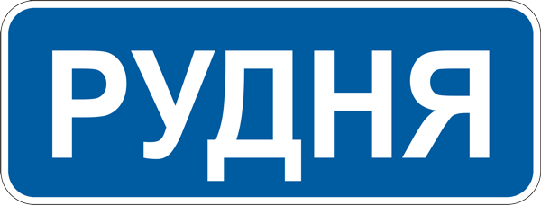
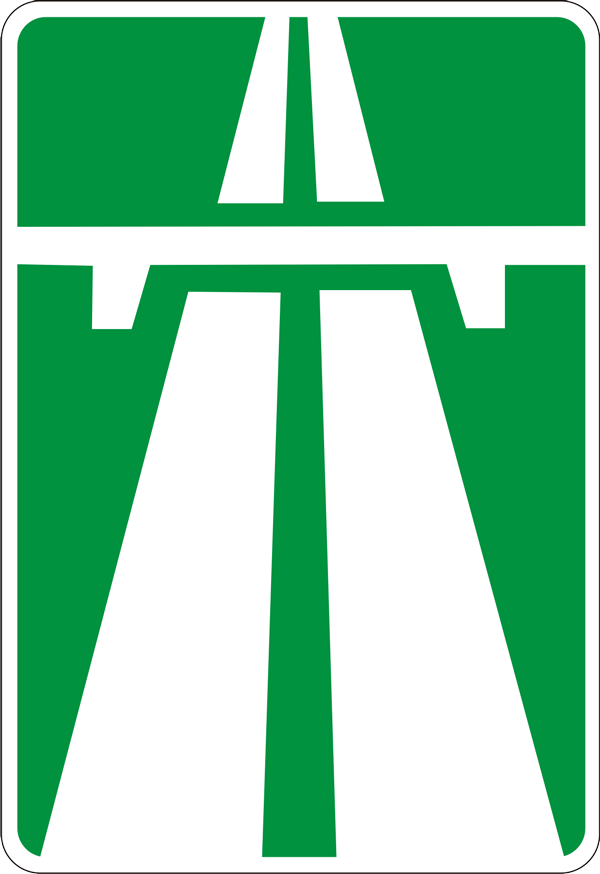
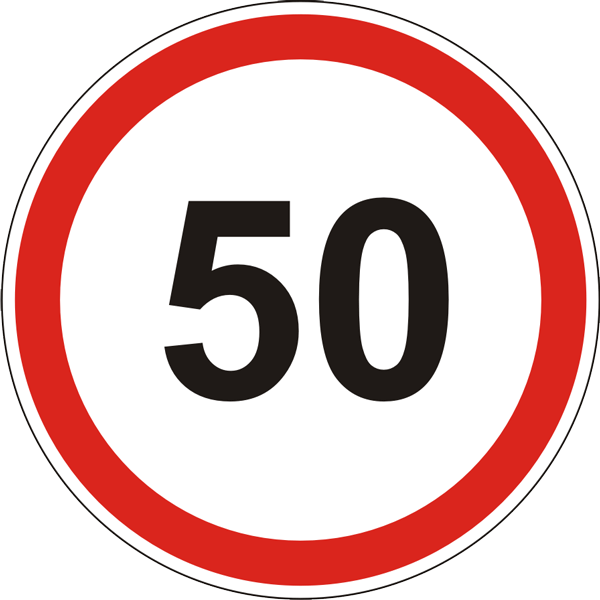
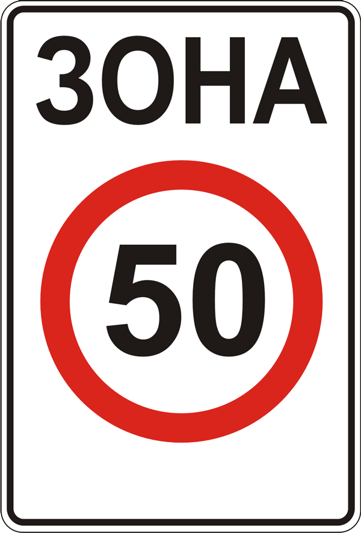

12.1. Під час вибору в установлених межах безпечної швидкості руху водій повинен ураховувати дорожню обстановку, а також особливості вантажу, що перевозиться, і стан транспортного засобу, щоб мати змогу постійно контролювати його рух та безпечно керувати ним.
12.2. У темну пору доби та в умовах недостатньої видимості швидкість руху повинна бути такою, щоб водій мав змогу зупинити транспортний засіб у межах видимості дороги.
12.3. У разі виникнення небезпеки для руху або перешкоди, яку водій об’єктивно спроможний виявити, він повинен негайно вжити заходів для зменшення швидкості аж до зупинки транспортного засобу або безпечного для інших учасників руху об’їзду перешкоди.
12.4. У населених пунктах рух транспортних засобів дозволяється із швидкістю не більше 50 км/год.
12.5. У житлових і пішохідних зонах швидкість руху не повинна перевищувати 20 км/год.
12.6. Поза населеними пунктами на всіх дорогах та на дорогах, що проходять через населені пункти, позначені знаком 5.47, дозволяється рух із швидкістю:

5.47
а)автобусам (мікроавтобусам), що здійснюють перевезення організованих груп дітей, легковим автомобілям з причепом і мотоциклам – не більше 80 км/год.;
б) транспортним засобам, якими керують водії із стажем до 2 років, – не більше 70 км/год;
в) вантажним автомобілям, що перевозять людей у кузові, та мопедам, – не більше 60 км/год;
г) автобусам (за винятком мікроавтобусів) – не більше 90 км/год;
ґ) іншим транспортним засобам: на автомобільній дорозі, що позначена дорожнім знаком 5.1 – не більше 130 км/год., на автомобільній дорозі з окремими проїзними частинами, що відокремлені одна від одної розділювальною смугою – не більше 110 км/год., на інших автомобільних дорогах – не більше 90 км/год.

5.1
12.7. Під час буксирування швидкість не повинна перевищувати 50 км/год.
12.8. На ділянках доріг, де створені дорожні умови, що дають можливість рухатися з більш високою швидкістю, за погодженим з уповноваженим підрозділом Національної поліції рішенням власників доріг або органів, яким передано право на утримання таких доріг, дозволена швидкість руху може бути збільшена шляхом встановлення відповідних дорожніх знаків.
12.9. Водієві забороняється:
a)перевищувати максимальну швидкість, визначену технічною характеристикою даного транспортного засобу;
б) перевищувати максимальну швидкість, зазначену в пунктах 12.4-12.7, на ділянці дороги, де встановлено дорожні знаки 3.29, 3.31, або на транспортному засобі, на якому встановлено розпізнавальний знак відповідно до підпункту “и” пункту 30.3 цих Правил;

3.29

3.31
в) перешкоджати іншим транспортним засобам, рухаючись без потреби з дуже малою швидкістю;
г) різко гальмувати (крім випадків, коли без цього неможливо запобігти дорожньо-транспортній пригоді).
12.10. Додаткові обмеження дозволеної швидкості руху можуть вводитися тимчасово і постійно.
При цьому разом із знаками обмеження швидкості руху 3.29 та/або 3.31 обов’язково додатково встановлюються відповідні дорожні знаки, які попереджають про характер небезпеки та/або наближення до відповідного об’єкта.
У разі коли дорожні знаки обмеження швидкості руху 3.29 та/або 3.31 встановлені з порушенням визначених цими Правилами вимог щодо їх введення чи з порушенням вимог національних стандартів або залишені після усунення обставин, за яких їх було встановлено, водій не може бути притягнений до відповідальності згідно із законодавством за перевищення встановлених обмежень швидкості руху.
12.10-1. Обмеження дозволеної швидкості руху (дорожні знаки 3.29 та/або 3.31 на жовтому фоні) вводяться тимчасово виключно:
а) у місцях виконання дорожніх робіт;
б) у місцях проведення масових або спеціальних заходів;
в) у випадках, пов’язаних із стихійними (погодними) явищами.
12.10-2. Обмеження дозволеної швидкості руху вводяться постійно виключно:
а) на небезпечних ділянках доріг та вулиць (небезпечні повороти, ділянки з обмеженою видимістю, місця звуження дороги тощо);
б) у місцях розміщення наземних нерегульованих пішохідних переходів;
в) у місцях розташування стаціонарних постів Національної поліції;
г) на ділянках доріг (вулиць), прилеглих до території дошкільних та загальноосвітніх навчальних закладів, дитячих оздоровчих таборів.